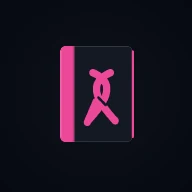
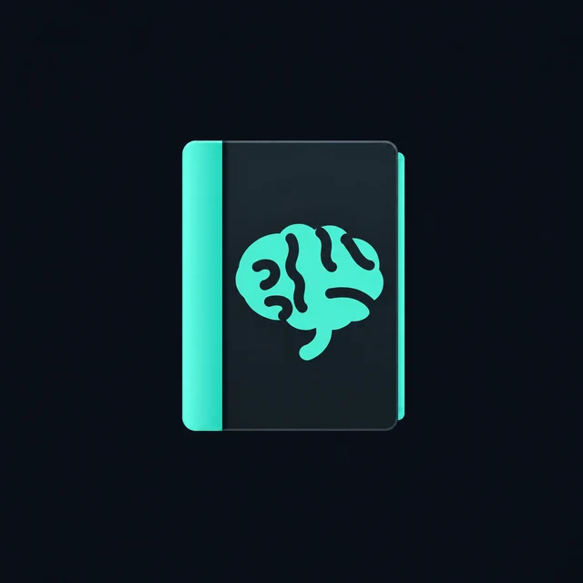

Autism
Sensory experiences, communication, routines, and regulation.
More than a place to take notes. My Care Journals brings focused caregiving journals together with educational guidance, practical suggestions, and private, offline-first record keeping.
Caregiving guidance and journals included · Android available · iPhone release pending

Explore guidance and unlimited private journaling across all available journals. More conditions can be added over time.
Sensory experiences, communication, routines, and regulation.
Food-related concerns, anxiety, sleep, and routines.

Communication, daily support needs, and changes in routines.
Health, communication, routines, and everyday support.
Communication, sensory needs, behavior, and daily routines.
Attention, organization, routines, and daily challenges.
Mood changes, sleep, routines, and day-to-day observations.
Symptoms, daily routines, well-being, and support needs.
Movement, falls, sleep, mood, and everyday routines.

Memory changes, wandering, sleep, mood, and daily observations.
Fatigue, mobility, symptoms, and everyday activities.
Movement, mobility, communication, and everyday support needs.
All journals include educational guidance, safety checklists, and unlimited observations at no cost. Caregiver Plus adds two optional ways to organize and review what you've recorded.
Create print-friendly PDF reports from your recorded observations. Choose a date range, then preview, save, share, or print for appointments.
Explore recorded observations over time and by journal category. Charts reflect what you've logged, not medically verified symptom frequency.
No subscription. Unlock both tools across current and future journals. Tools work offline after activation; purchase and restoration require internet access. Store prices may vary by region.
Caregiving is complicated. Keep important observations organized while having helpful, condition-specific information close at hand.
Record meaningful moments in categories tailored to the care you provide.
Explore educational guidance, practical suggestions, and safety checklists. Not medical advice.
Keep journal records in an encrypted database on your own device.
Save and restore encrypted backups when you choose.
Add another layer of protection for your journal entries.
Choose the language that works best for you.
Have a suggestion for a new journal? Tell us which condition you'd like to see supported. Requests help guide future development, though not every suggestion can be guaranteed.
Enter the journal name below. Your request will be emailed directly to My Care Journals.
My Care Journals was created by an independent developer in Maine who also works directly in caregiving. The goal is simple: help people organize observations, find useful information, and keep personal notes private.
No app replaces professional guidance or the people providing care. But it can make important details easier to remember.
Explore condition-specific journals, practical guidance, and optional advanced tools.
Get My Care Journals →